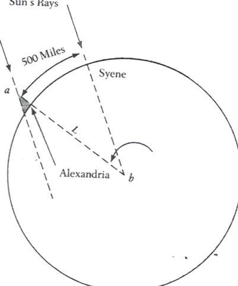

By using basic geometry, a few facts, and a lot of insight, Eratosthenes was able to show that if the 500 miles from Syene to Alexandria was 1/50 of the entire circumference of the Earth, then the Earth must be approximately 25,000 miles in circumference (500 x 50 = 25,000). By measuring the angle a of the cast shadow in Alexandria to be 7 degrees, he knew the angle b to be 7 degrees as well or about 1/50th (7/360) of a circle. Although the angles in this illustration are exaggerated, note that a crucial premise in Eratosthenes' conclusion is the geometric principle that a line L intersecting two parallel lines creates alternate angles that are equal (a = b).